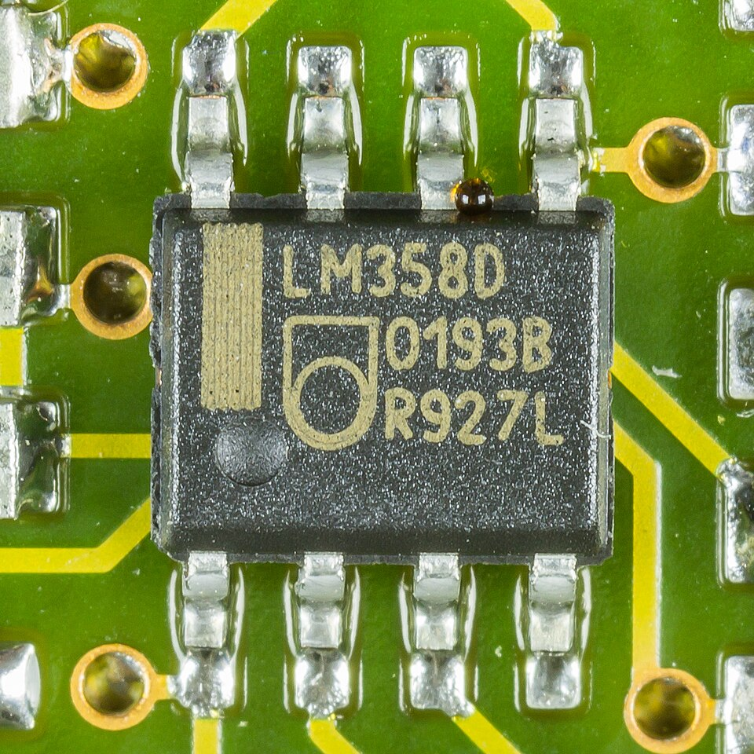
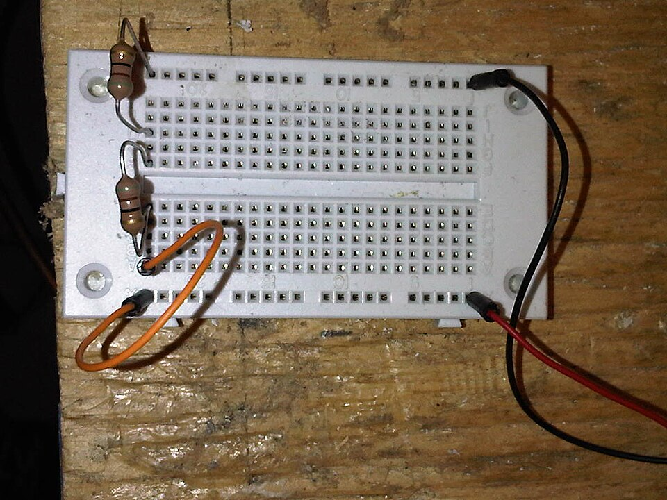

Buffer a weak sensor signal and find the limits
Build a unity-gain op-amp buffer, compare its drive against a plain divider and measure a gain stage before it clips.
Wire the divider and buffer
Use an MCP6002 PDIP-8 on a breadboard, a 5 V isolated supply limited to 30 mA, two 10 kΩ resistors, a third 10 kΩ load and a 100 nF bypass capacitor. Read the pin diagram for your exact package. For the PDIP put pin 8 at +5 V and pin 4 at return. Fit the bypass close between those pins. Straddle the centre gap and verify notch orientation before powering. Tie the unused amplifier’s non-inverting input to return and connect its own output to its own inverting input.
- Build the two equal resistors as a divider. Measure its 2.50 V centre unloaded. Add the third 10 kΩ to return and expect about 1.67 V.
- Move the load off the divider. Connect the divider centre to pin 3 (+) and wire pin 1 (OUT) back to pin 2 (−). Measure the source and output with no load.
- Fit the 10 kΩ load from pin 1 to return. Both readings should stay close to 2.50 V. The load draws about 0.25 mA largely supplied by the amplifier. Record the actual difference between the input and output.

Photo by Raimond Spekking, resized. Original photo · CC BY-SA 4.0.


Photo by Toluaj, with on-page callouts. Original photo · CC BY-SA 3.0.

TI Precision Labs demonstrates output swing.
Make it amplify and find where the prediction ends
With power off, remove the direct feedback wire. Fit 10 kΩ from pin 1 to pin 2 and 10 kΩ from pin 2 to return. Replace the input divider with a 10 kΩ pot across 5 V and return, with its wiper feeding pin 3. Begin near 1 V input and expect roughly 2 V output. Record 1, 2, 2.4 and 3 V input. At 3 V, a gain of two would ask for 6 V, beyond the positive rail. Record the measured ceiling and the load used. Disconnect power before changing resistance or wiring.
The analog chain in a controller has similar limits. A scaling problem changes a point displayed by software. Clipping is already visible at the hardware pin. Photograph or sketch your connection, and mark which measurements separate those failures.
Related lesson and source material
T54 · Source resistance, loading and measurement uncertainty.